What is Quickly?
Installing Quickly
The Goal Project
Creating a Quickly Project
Creating the Empty Project
Creating an empty but working program couldn't be simpler. First, open a terminal window to type commands into. When it's open, type the command:
$quickly new ubuntu-project super_text
 This will create a super_text sub directory containing a complete directory tree and files for an empty python appliction. The command finishes by running the newly created empty application.
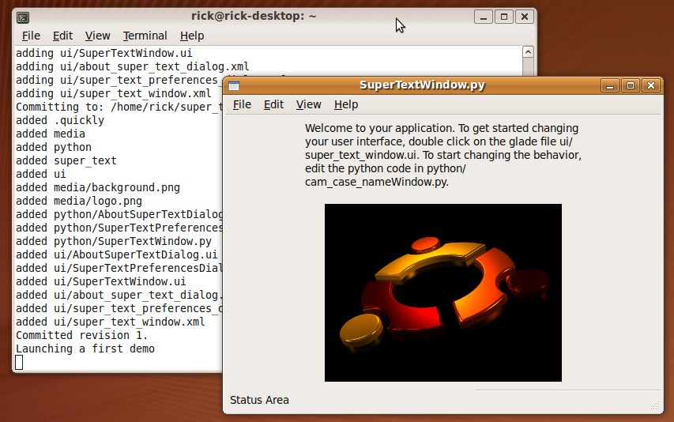
This will create a super_text sub directory containing a complete directory tree and files for an empty python appliction. The command finishes by running the newly created empty application.
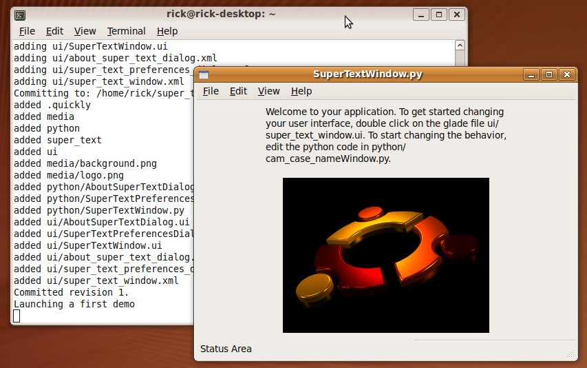
Testing the Empty Application
The are populated and set up, and you can resize the window. Notice that quickly interfered that the application title is "Super Text". Only a few of menu items do anything in the empty application, Help->About, Edit->Preferences, and File->Quit.

Running the Applicatin
Close the application by closing the window or using the Quit command. Since the empty application isn't installed into Ubuntu yet, you can't start the application from the application menu yet. To start the applicaton, use the terminal to first cd into the new subdirectory, and then issue the command to start the program.
$cd super_text
super_text$./super_text

Edit the User Interface
Quickly programs use Glade to edit the user interface. Start Glade with quickly in order to set up Glade for editing the empty applicaton. Don't start glade directly, or it won't load the necessary catalogue files for editing the classes that were automaticaly generated by quickly.
super_text$quickly glade
 Glade will open with the project loaded up and ready to edit.
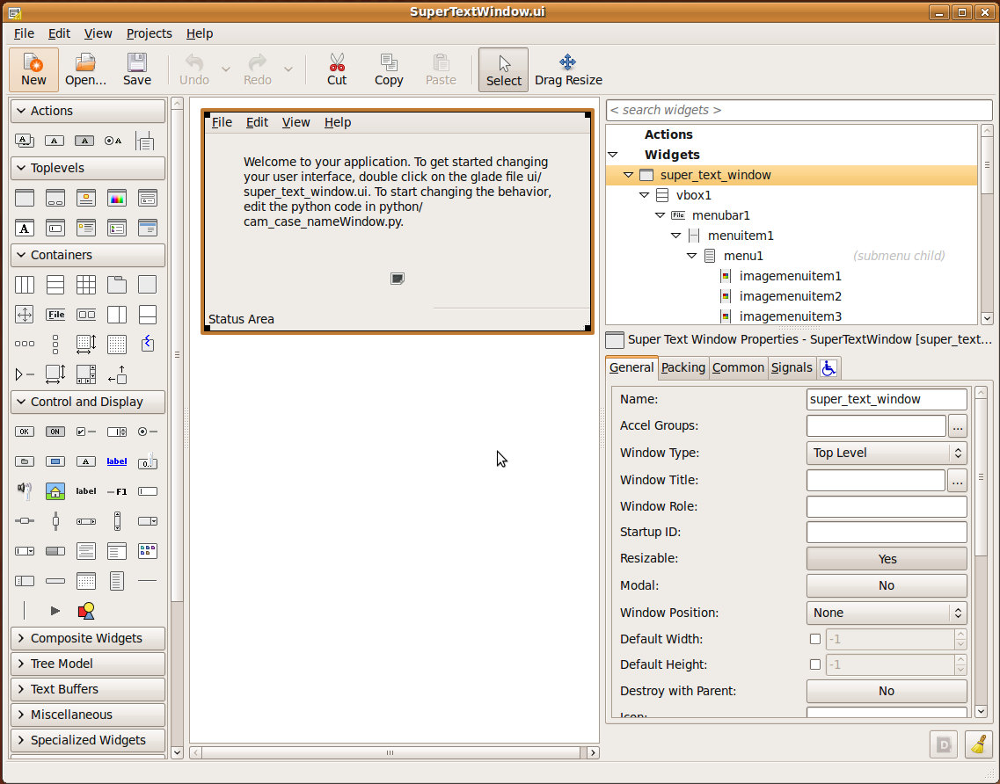
Use the Project Menu to choose "SuperTextWindow.ui" for editing.
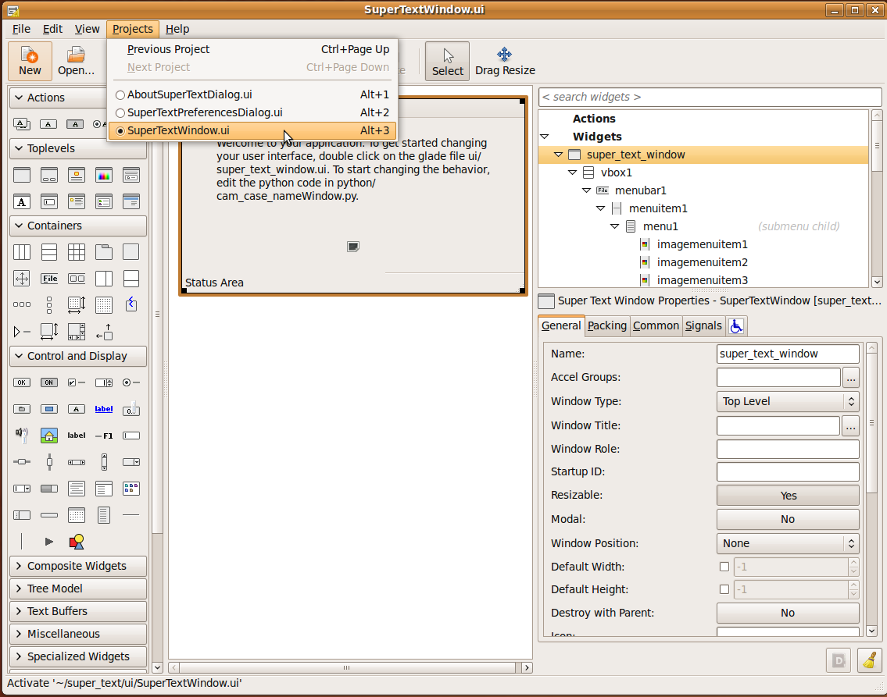
We want to create a text area for typing into. There are some default Widgets added to the Window. We won't need these so we'll start with deleting them. Click on the label, and press delete, and it will disappear from the window.
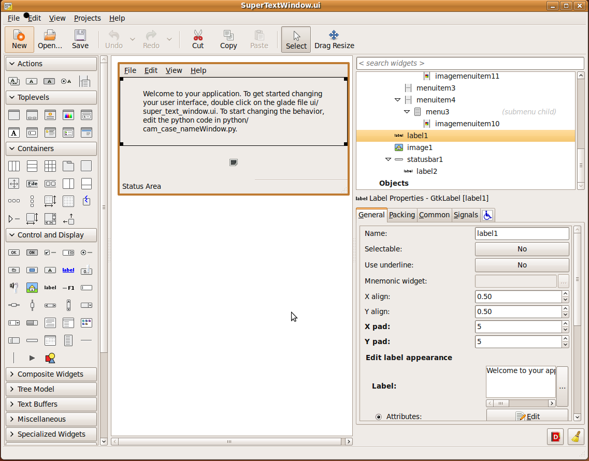
Glade will open with the project loaded up and ready to edit.
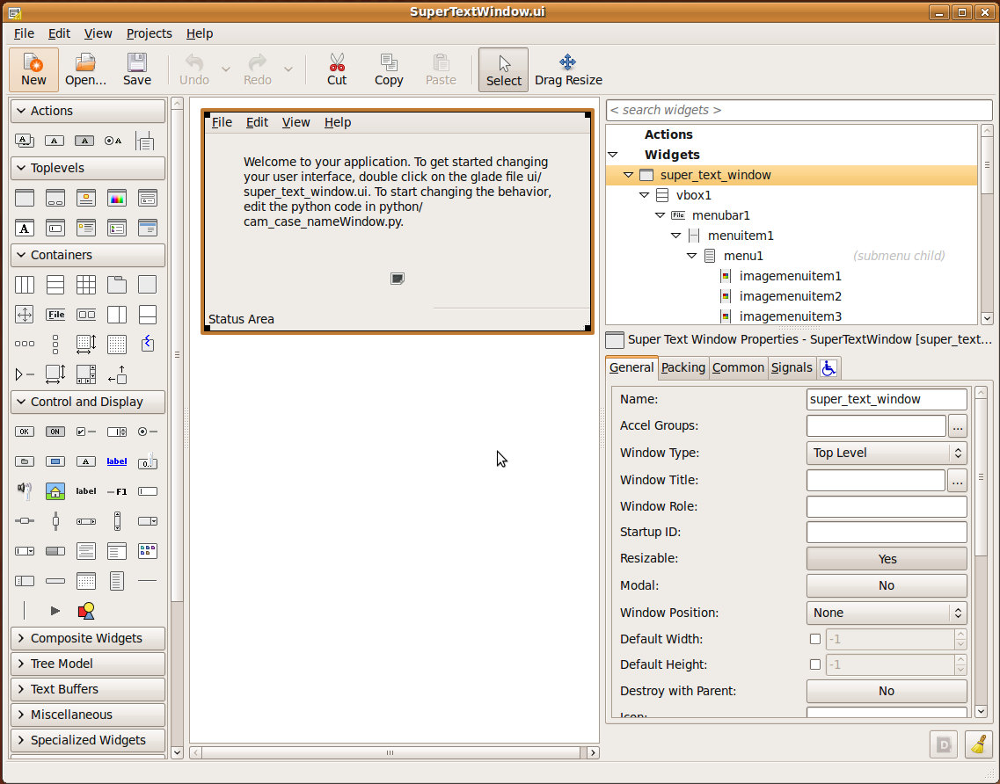
Use the Project Menu to choose "SuperTextWindow.ui" for editing.
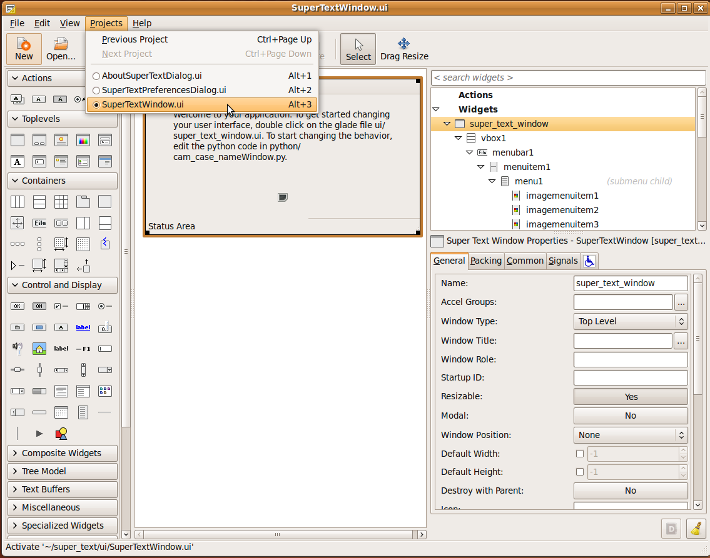
We want to create a text area for typing into. There are some default Widgets added to the Window. We won't need these so we'll start with deleting them. Click on the label, and press delete, and it will disappear from the window.
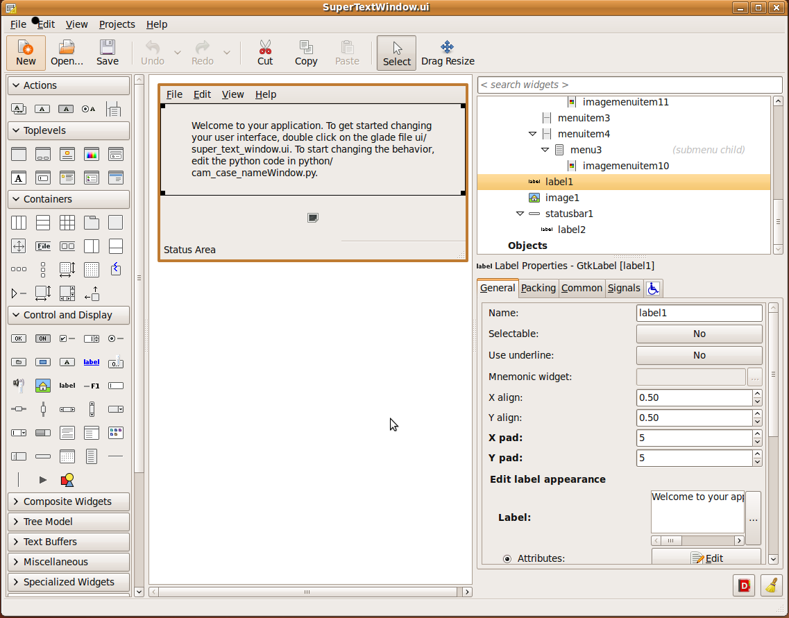
 Do the same with the image widget.
Do the same with the image widget.
 This leave us two free slots.
This leave us two free slots.
 We'll use the bottom slot to add a TextView widget for the user to type into. In the toolbox, click on the TextView widget. Then click in the empty slot.
We'll use the bottom slot to add a TextView widget for the user to type into. In the toolbox, click on the TextView widget. Then click in the empty slot.
 Make sure you save the file in Glade, or your changes won't take! Then run the application from terminal again. The window now has a place where the user can type.
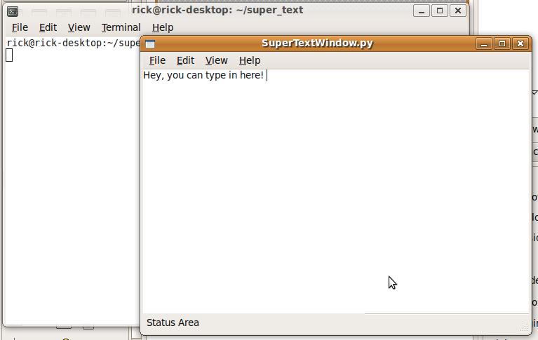
Make sure you save the file in Glade, or your changes won't take! Then run the application from terminal again. The window now has a place where the user can type.
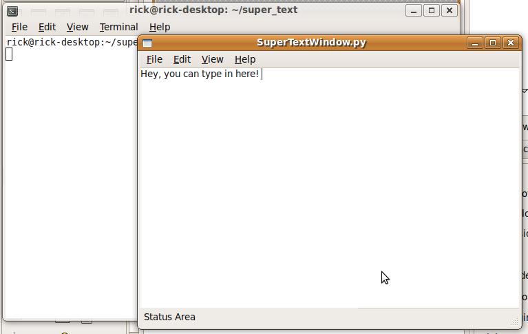
Add the Save, Open, and New Features
After the user types something, they may want to save it. A File->Save menu item was automatically created in the empty was created, but it's not hooked up to any code. To make Save work, we need tell the menu item what function to call, and then create a funtion to actually do the saving.
Set the Signal Handler in Glade
To tell the menu item what function to call, open up the window in glade:
super_text$quickly glade
Click on the file menu, and the menu opens as if the application were running.
Choose the Save menu item, and it will be selected in Glade.
 Then choose the "Signals" tab of the properties window.
In pygtk, menu items are "activated" when a user chooses the item from the menu. Since we want a function to run when the user chooses Save, we want to specify a function to respond to the activate signal from the menu item. We'll call the function "save". Simply type the function name into the box for the activate signal. Make sure to save the glade file.
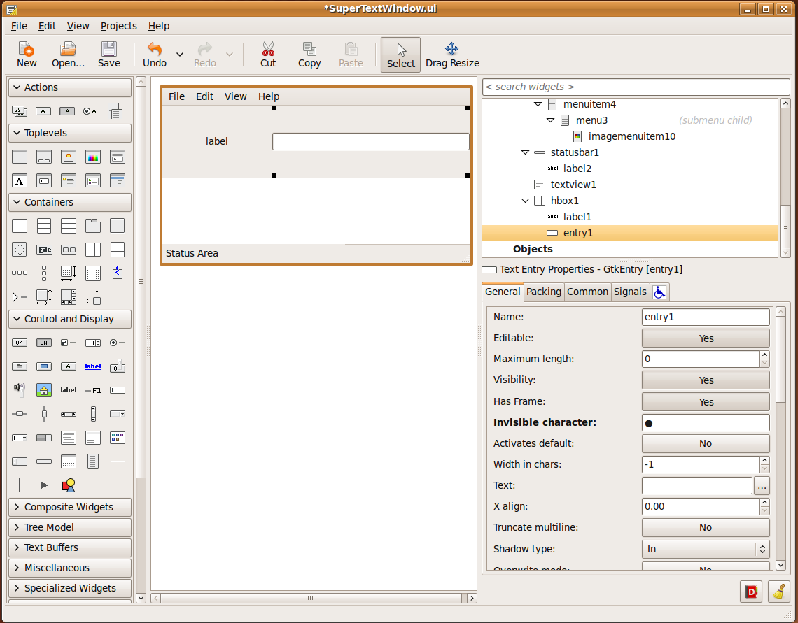
Then choose the "Signals" tab of the properties window.
In pygtk, menu items are "activated" when a user chooses the item from the menu. Since we want a function to run when the user chooses Save, we want to specify a function to respond to the activate signal from the menu item. We'll call the function "save". Simply type the function name into the box for the activate signal. Make sure to save the glade file.
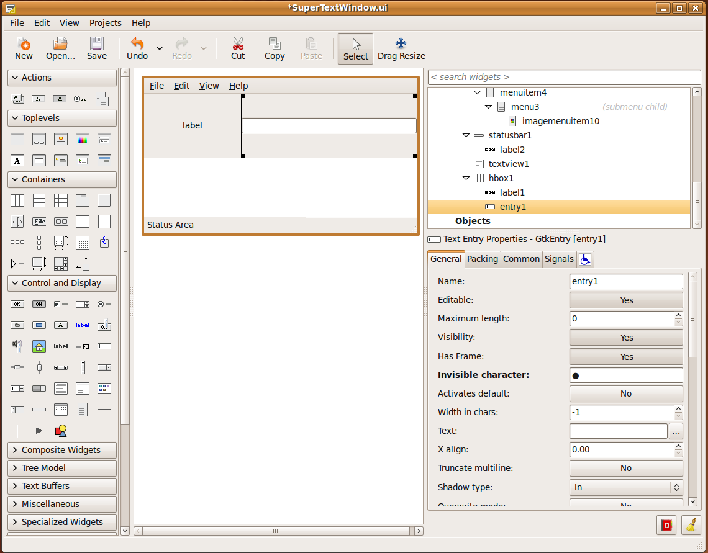
Implement the Save Function
Of course, this won't make the file actually save, because we haven't created the "save" function yet. So it's time to write a little code.
The code for SuperTextWindow is stored in the file SuperTextWindow.py.
Notice the relationship, SuperTextWindow.ui and SuperTextWindow.py. These two files always work tog.ether to make your program work. The .ui file stores the presentation of the window, while the .py file stores the behavior.
Use the quickly edit command to start editing your code files:
super_text$quickly edit
This will open the default Ubuntu text editor "Gedit" with any python files in the python directory. In this case, just SuperTextWindow.py and about.py.
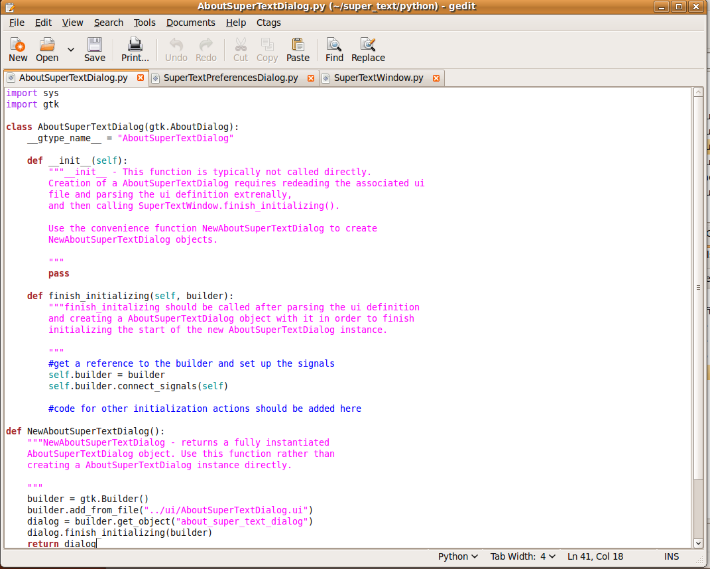
SuperTextWindow.ui is now expecting to find a function SuperTextWindow.save(), so we simply add one to the SuperTextWindow class:
def save(self, widget, data=None):
print "save"
This will print the word "save" to the terminal when run. The method signature is the standard signature expected in a signal handler. If you are new to python, be sure to follow the indentations exactly, as the indentation level is very important in python.
d. respond to the save command
e. save the file
f. respond to the open command
g. load the file
h. respond to the new command
i. clear it out
3. Save your work
1. commit it
2. create a launchpad account
3. push it
4. pull it
4. package it
1. edit setup.py
1. quickly package
2. run the deb
3. try it out
4. Make a PPA
1. already editted setup.py
2. already have a launchpad acocunt
3. quickly release